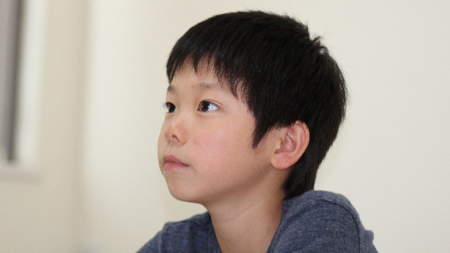

先日某塾主催の教育講演会に講師として招かれ、質疑応答も含めて2時間あまりお話して来ました。
内容はこのブログでも再三お伝えしている「2020年からの大学入試改革」とその背景、そして家庭での親のあり方についてでした。
参加者は百数十人。やはり進学塾に通わせる保護者だけあって、皆さん熱心に耳を傾けメモを取る人も多く質問も的を射ていました。
おかげさまで会は盛況のうちに終了。帰りぎわにも私に質問する人もいて、子どもたちに「新しい学力」が必要であること、そのために家庭で親は何を心がけるべきか皆さん真剣に考えていることがヒシヒシと伝わってきました。
さて、講演会でもこのブログでも私はたくさんのことをお伝えしているわけですが思い切ってシンプルにまとめるなら「主体性のある人間を育てなければならない」という一言に尽きると思います。
新しい形の大学入試も、高校や中学そして小学校の新カリキュラムも全てはこの「主体的人間」の育成を最大目標として考案されていると申し上げてよいと思います。
では、主体的人間とはどのような人なのか。主体的に生きるとはどういう生き方なのか。そしてそれは今までの生き方とどう違うのか。
今回はその辺について考えてみたいと思います。
私の考える主体的人間とは次のような人です。
①自分を大切にする
②曇りのない目で「現実」を見ることができる
③その上で自由に生きる
こう書くと、アレっと思う人がいるかも知れません。それは主体性という言葉から、もっとアクティブで積極的にバリバリ行動する人をイメージするからです。自ら進んで我が道を切り拓いていく、ゴーイングマイウェイな生き方を想像するのでしょう。
それはしかし、外側から見た「主体的生き方」の１つの表れであって私が言いたいのは、外から見た姿ではなく内側のあり方です。外側の行動に表れる前の心的態度と言えます。
上の３つは、どんな行動（行為）であれ主体的に生きる上で欠かせない要件―必要欠くべからざる条件―なのです。
なぜ自分を大切にしないといけないのか
主体的に生きるとは、まず何よりも自分を大切にする人であるといえます。
私たち―多くの日本人―は人生の早い時期から他者の反応を気にする生き方を教えこまれます。「そんなことしたら人から笑われるわよ」「ホラいつまでも泣いてちゃダメでしょ。皆が見てるじゃない」と幼いころから言われて育ち、長じても「空気を読めよ」「出る杭は打たれるんだから、ここは大人しく様子を見ておこうか」と他者や周囲の状況をうかがって自分を押さえて生きている人は多いでしょう。
協調性が大事。「和」が大事。雰囲気を悪くしちゃいけない。
それはそうかも知れません。
しかし私たちは自分の気持ちや考え、欲求を素直に表現することもきわめて大切だということを忘れがちです。他者とのあつれきを恐れて、自らの正直な思いを抑制することは結局集団に埋没し自分を見失う行為だからです。
これが積み重なると、やがて自分を許せなくなったり無気力におちいったりします。
また、私たちはとかくネガティブな感情や思いも抑圧しがちです。嫌いな人がいる。誰かに何か言われて反発する。昔、親に言われたひとことが許せない。やりたくない気持ちを抱えたまま仕事だからと仕方なくやっている。
これらの状況にいるとき、私たちは「こんな思いをもつことはいけないことだ」と、現に感じている感情にフタをしてしまいがちです。
こういうとき私たちは自分を大切にしていません。
「本当は嫌だけどそんなこと言ったらワガママだ」とか「ジコチューだと思われそうだ」
「皆の考えとは違うが、せっかくの和を乱したくないし…」
などと考えて、私たちは「本当の自分」を表現することをためらい「自分さえガマンすれば済むことだから」と大人の態度（？）で本心を抑圧します。
これが続くと本当の自分が、何を考えどうしたいのかが分からなくなっていきます。
そうして最終的には、無力感や自信のなさを抱えたまま「他人の敷いたレール」の上をトボトボ歩くことを余儀なくされるのです。
主体的とは全く真逆の生き方です。
「外側（他者の目や状況）を気にして、本当の自分を抑圧することは、自分のパワーを他に明け渡す行為だからです」
嫌いな人がいるなら嫌っている自分でいいと認めて下さい。
怒りを感じるなら怒ればいい。
やりたくないことならやらずにすませばいい。
それは、怒りを人にぶつけるとか他者を攻撃することではなく、いったん心の中でその思いを認めることで感情は、ネガティブからニュートラル（中立）なものに昇華されていくからです。
その状態からなら、たとえ本心を伝えたり意見を主張したとしてもマイナスの状況にならずにすむものです。
ですから私の言う、「自分を大切にする」とは、決して自己中心的にふるまうことではなく自分の中の自然な感情や思いをしっかり認め、ブレない自分軸をもつということです。
そうでないと、常に他者や状況という外側の現実にふり回されることになり、主体性とほど遠い生き方となるでしょう。
私たちがリアルな現実を見れないワケ
そして「曇りのない目で現実を見る」ですが、これは前回の記事でも触れたように日々の経験を「初めて見る」ようにとらえることで、何事にも新鮮な眼差しを向けることを意味します。
でもこれは意外に難しい作業なのです。
というのも私たちの脳は効率を追求するからです。要するに手抜きする(笑)
目の前の状況―出来事や人間関係―に対して私たちの脳は即座に過去の膨大なデータを検索し、似たような記録ファイルの中からもっとも適した対処法をピックアップしてきます。私たちは自分の判断や行動を自分の意志で決定していると思っていますが、実は選ばされているといえるのです。
「これはあのときの状況と同じだ。だから今回もこうしよう。」
「これはあのとき失敗した状況に似ている。回避しよう」
こういうふうに私たちは瞬時に判断し、無意識の自動モード（操縦）で行動します。
これが多くの人の行動がパターン化され、くり返しにおちいっている原因です。
「1度目は新鮮な体験でも2度目からはパターンになる」
ということです。
考えてみれば分かることですが、私たちが日々する経験はそのつど新しいものです。
昨日の出来事は過去であり、今日の出来事はいま初めての経験であり未知のものです。
2度同じ経験はあり得ない。
すべては移り変わっていき、日々新しい出来事は起こっている。
それでも私たちは、過去の記憶をそこにあてはめてそれらを固定したものと捉え自らの見方を変えようとしないのです。
要するに私たちが「現実」をありのままに見ることは難しいということです。
主体的な人間とは自由であること
このように私たちは過去の記憶（データ）という曇りガラス越しに外界を見ているわけで、決してリアルな現実ありのままの姿を認識しているのではありません。
様々な記憶、データというフィルターで現実をゆがめて見ているといえるでしょう。
その記憶やデータとは、個人的体験だけでなく世間の常識、ルール、誰かに信じこまされた思い込みなど多くの信念（belief）が積み重なって出来上がったものです。
だから私たちは自分の目で見て、自分の意志で判断し行動していると思っていてもその実「他者」にそう見させられている、そう判断させられている、そう行動させられているといえます。
これを避けるためには、つまり自分の目でしっかりと現実（リアル）を正しく把握し自分の意志で行動するためには次の２つを心がけるとよいと思います。
1.目の前の現実を今はじめて見るという見方を意識的に行う
2.目の前の現実を固定的に考えない。ゼロベースで考える
私たちが現実を正しく見れない理由は、ふだんから何事も無意識の自動モードに任せすぎているからです。なのでそれを解除し何事も「初めて見る」かのように意識的に見ること。その上で、当たり前だ常識だと思っていることでも「それは違うかも知れない。別の見方はできないか」と新鮮な視点でながめること。
この２つを心がけることが主体的な態度につながります。
ここまで述べてきた「自分を大切にする」「曇りのない目で現実を見る」方法は、いずれも外側に主導権を握られることなく自分の内側から物事を把握する上で有効なツールです。
これを実行すると不思議なことが起こります。
これまで恐れていたこと。他者から抵抗されたり物事がうまくいかないということがだんだん減ってきます。それどころか以前より自由にふるまってもなぜか物事がスムースに流れ出し、さらに自由度が増してくる感覚を覚えます。
人々は協力的になり、問題はいつの間にか問題でなくなり悩み事も気が付いたら知らぬ内に解消している。そんな経験が増えてきます。
こうして主体的であることは究極的には自由であることに気づくのです。
だからこういうことが言えます。
自分が主体的であるかどうかは、自分がどれだけ自由に生きているか。すなわち自由を感じる度合いの大きさによって分かると。
なぜなら自分の行動に制限をかけ、自らを抑制し不自由にしていたものこそ他者（外側）の価値基準に重きを置くあまり自分をないがしろにしてきた自分自身であったからです。
そのような他者（外側）依存を止め、自分の内側にすべての価値基準を置くこと。つまり自由であることが主体的に生きるということになります。
これはいいかえると、自分の内側を明るく照らしその光で周囲を輝かせる生き方です。ルールに従う人ではなくルールを作る人です。人の作った道を歩む人ではなく新たな道を作る人です。過去をふり返るのではなく未来のために現在を創造する人です。
だから主体的に生きることは必ず創造的な生き方につながるのです。
先の見えない今の時代だからこそ、世界は必死に「主体的人間」の登場を望んでいるのでしょう。
それほど「新しい創造」が必要とされているということです。